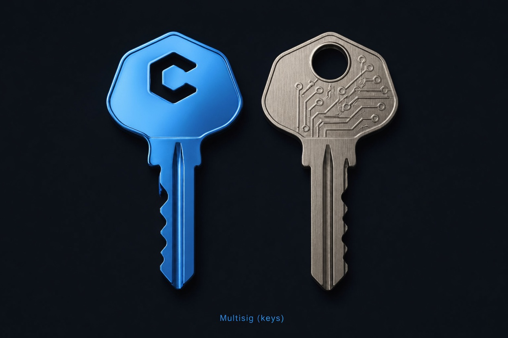
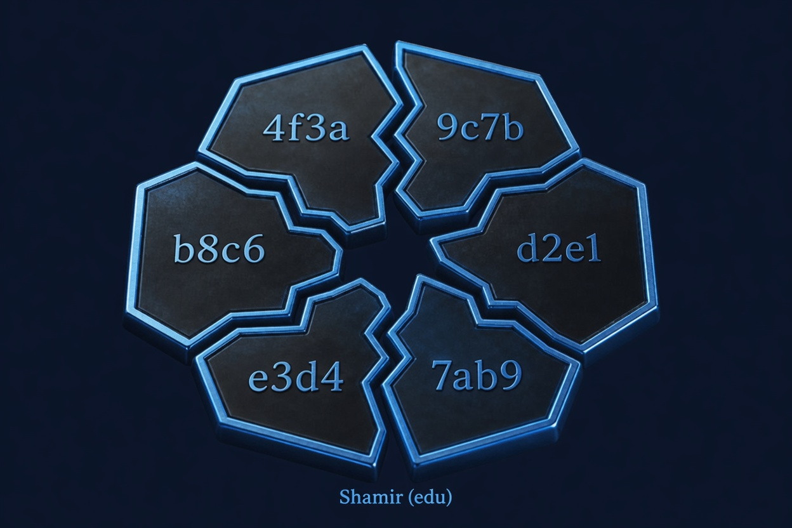
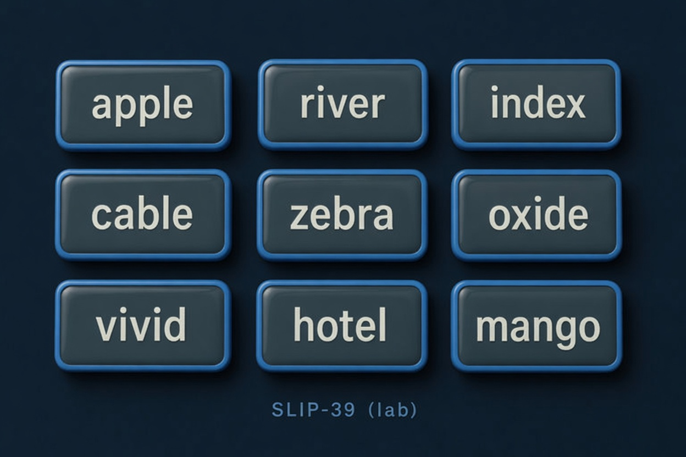

What this is / isn’t Offline BIP-39 lab + First hour + lab. Later levels stay off this face.
| This lab is | This lab is not |
|---|---|
| An offline classroom for BIP-39 ideas (generate, derive, watch-only) | A Bitcoin wallet (no send, no balance of your seed) |
| Safe for practice phrases and goldens (e.g. abandon…about) | A place to type a funded recovery phrase on a random computer |
| Educational Multisig, Shamir, SLIP-39 demos | Trezor Suite / production SLIP-39 backup tool |
| Tools for path, passphrase compare, PSBT inspect, entropy demos | A signer, broadcaster, or public seed scanner |
Prefer an air-gapped machine for anything that looks like a real seed. Use the First hour checklist below — that is the in-lab guide.
First hour checklist 0 / 0
Starter path (~15–30 min). Per step: Go jumps there (sticky ← Back bar appears), Mark done lights up after the step’s real action, then checks the box and returns here. Checkboxes are a readout (not a shortcut). Progress is this browser only.
You’re a Beginner — what’s next?
Starter lab is collapsed. This face is Passphrase and entropy — Q1–Q4 (wrong passphrase, under-threshold Shamir, TOO LOW, ~128 bits). Intermediate stays off this face. Raise Level when this chapter is done.
Chapter 1
Passphrase and entropy
Stronger passphrases come from more entropy. More entropy = stronger seed = stronger security.
Q1–Q4 complete
Next First Hour: 7 Network (optional) — fees only; understand the leak-ack. Then 8 Raise to Beginner.
- Q1 passphrase Not yet
- Q2 Shamir Not yet
- Q3 too low Not yet
- Q4 enough bits Not yet
Q1
Wrong passphrase → different vault Not yet
Test that a small change creates a completely different vault.
Not yet. Open compare, leave A empty and set B to test,
run derive — addresses must differ.
Passed (self-check). You confirmed wrong passphrase = different vault.
Q2
Under-threshold Shamir fails Not yet
See what happens when you don’t have enough shares.
Not yet. Split 2-of-3, recombine with one share (fail), then M shares (succeed).
Passed (self-check). Under-threshold recombine fails; threshold works.
Demo evidence ready. Mark passed to record the self-check.
Q3
A few rolls = TOO LOW Not yet
Measure entropy with just a few dice rolls.
Not yet. Go try → roll d6 about 3 times → read TOO LOW.
Demo ready. You saw TOO LOW with a short pad.
Passed. Few rolls are not enough for a real 12-word wallet.
Q4
Need ~128 bits (~50 d6) Not yet
Hit the target: generate ~128 bits with about 50 rolls.
Not yet. Keep rolling toward 128 bits, then mark passed.
Demo ready. Pad estimate reached the 128-bit target.
Passed. You saw that “enough” needs many rolls.
Intermediate self-check Three splits + Tools depth 0 / 4
keys ≠ shares ≠ share-words



Keys ≠ shares ≠ share-words, plus PSBT inspect-only. Advanced stays off this face. Self-graded — Go try, then Mark passed when the idea is clear.
- I1 keys Not yet
- I2 shares Not yet
- I3 words Not yet
- I4 inspect Not yet
I1 — Multisig = keys, not shares Not yet
Several people each hold a key. Spend needs M-of-N signatures. That is not “shares of one secret blob.”
Not yet. Open Multisig, read that cosigners hold keys. Then mark passed.
Passed. Multisig = separate keys + threshold signatures.
I2 — Shamir edu = hex shares, not BIP-39 words Not yet
Educational Shamir splits a practice secret into hex shares. Not BIP-39 recovery words, not SLIP-39.
Not yet. Open Shamir, note hex share format. Then mark passed.
Passed. Shamir lab shares ≠ BIP-39 words.
I3 — SLIP-39 lab = share words (not Suite, not funded) Not yet
SLIP-39 lab uses share mnemonics (Trezor-shaped). Lab only — not vendor Suite, not funded wallets.
Not yet. Open SLIP-39 lab, read the lab-only warning. Then mark passed.
Passed. SLIP-39 share words ≠ Multisig keys ≠ Shamir hex.
I4 — PSBT inspect-only (no sign / no broadcast) Not yet
Tools PSBT card parses structure offline. It never signs, never finalizes, never broadcasts.
Not yet. Open Tools → PSBT inspector; confirm inspect-only copy. Then mark passed.
Passed. PSBT here is inspect-only — no signing path.
Intermediate self-checks done — what’s next?
Advanced stays off this face until you raise Level.
BIP-85 — child seeds (advanced, educational)
Idea: one master mnemonic can derive many application child mnemonics (different index → different app). This lab teaches the mental model. Demo below is not full BIP-85 crypto yet — practice only.
Raise Level to Advanced, put a practice phrase on Lab, then click Explain.
Ops — private Knots / seed-scan
Private balances and educational hash-only seed scans use a local Bitcoin Knots/Core node (Pi checklist), not this public website. Never expose RPC to the internet.
- Pi / node checklist: see repo
docs/BITCOIN_KNOTS.md - Educational scan CLI:
scripts/seed_scan_educational.py --preflight-only - Public Network page remains mempool fees/balances with leak ack only
master → child keys
This site is not a wallet.
assets/catalyxt/chapters/advanced-master-child.svg
(fallback advanced.svg if that URL is 200 later).
Advanced self-check Ops mind offline 0 / 4
Master → child keys. This site is not a wallet. BIP-85 idea, watch-only handoff, Knots limits, and what this lab is not. Self-graded — experiment, then mark passed.
- A1 BIP-85 Not yet
- A2 watch-only Not yet
- A3 Knots Not yet
- A4 is-not Not yet
A1 — BIP-85 idea (master → app children) Not yet
One master mnemonic can conceptually yield many application child mnemonics by index. Lab demo is educational — not full BIP-85 crypto yet.
Not yet. Open BIP-85 card, run Explain (practice phrase). Then mark passed.
Passed. BIP-85 is an idea for child app seeds — practice only here.
A2 — Watch-only export (no xprv on page) Not yet
Lab watch-only export is public material (zpub/xpub style). No private keys / xprv for wallet spend.
Not yet. Generate a practice phrase, open watch-only panel, confirm no xprv. Then mark passed.
Passed. Watch-only = public keys only for monitoring.
A3 — Knots limits (local node, not public farm) Not yet
Private balance / educational seed-scan work belongs on a local Knots/Core node. This website is not a bulk seed lottery or public RPC.
Not yet. Read the Ops card (Knots + seed-scan CLI). Then mark passed.
Passed. Serious private ops stay on your node, not public APIs.
A4 — What this lab is / isn’t Not yet
Orientation table: practice lab, offline crypto, not a funded wallet, not a seed farm.
Not yet. Re-read “What this is / isn’t” on Lab. Then mark passed.
Passed. You can state what bip39lab is not.
Mnemonic
English BIP-39 only. Optional passphrase is a BIP-39 extension (not a PIN).
Shortcuts (when not typing): G generate · D derive · ? Tools shortcuts · Esc close QR. Clear secrets empties Lab memory only; Tools cards that need a phrase will auto-generate TEST DATA next time.
About Seed QR, print, Network handoff
Seed QR and Print only work after the live phrase validates. Each asks you to confirm that you are showing or printing the full recovery phrase. Network handoff stores addresses only in sessionStorage, and only when you click Send addresses.
Updates as you type. Longer + mixed characters raise the estimate. This is not the BIP-39 seed’s fixed 512-bit PBKDF2 output size.
Why “512 bits” is not the passphrase strength
The BIP-39 seed is always 64 bytes from PBKDF2 — that is output size, not “512 bits of entropy.” Mnemonic entropy (e.g. 128 bits for 12 words) is BIP-39 ENT. Passphrase strength here is a local estimate only (Shannon + charset × length, capped) so you see empty vs weak vs longer secrets — not a guarantee against attack.
Receive addresses
Offline “account numbers” from your phrase. Crypto stays in this tab. Progress/theme may be saved in the browser. Addresses go to Network only after explicit opt-in.
Bank vault metaphor
Think of your recovery phrase as the master key to a bank vault. From that one key, wallets create many different “account numbers” (addresses) so you can receive bitcoin without reusing the same number every time.
BIP-86 Taproot (bc1p…) — default modern receive style in this lab — set by these tabs. Path m/86'/….
What each type means (simple)
- # — address number in the sequence (0, 1, 2…). Same phrase + same settings always gives the same list.
- BIP86 Taproot (bc1p…) — newest common format. Path
m/86'/0'/account'/change/index. - BIP84 native segwit (bc1q…) — widely used. Path
m/84'/…. - BIP49 nested (3…) — older compatibility style. Path
m/49'/…. - BIP44 legacy (1…) — oldest style. Path
m/44'/….
What this is: public receive numbers only (safe to share when you want payment).
What this is not: not your recovery phrase, not a private key, not a balance.
| # | Address · BIP86 Taproot | Actions |
|---|---|---|
| Generate or paste a valid mnemonic to fill addresses. | ||
Copy & QR tips
Click Copy to put an address on the clipboard (like an IBAN). The button shows Copied briefly. Use QR for a scannable code offline. Only the address is copied — never the recovery phrase.
Watch-only export
BIP84 zpub — usual Sparrow / mobile watch-only import for native segwit.
Generate or paste a valid phrase, then refresh (or wait for auto-derive).
Toolbox, not a pipeline. Cards work independently. Some actions (compare, descriptors) use the Lab phrase if set, or auto-generate a throwaway test phrase so you need not visit Lab first — that is intentional demo material, not imported from elsewhere.
Phrase source: Lab mnemonic wins when it is a valid BIP-39 phrase in this tab’s memory. If empty/invalid (including after Clear secrets on Lab), Tools generates a new throwaway phrase into Lab and labels results TEST DATA — never assume results still use a phrase you cleared.
Use ⓘ for each card; Teach Off hides long tips but keeps safety notes.
Path playground
What this is: a derivation path is the folder path inside your seed tree that produces one receive (or change) address. It is not the seed itself — only “which branch” of BIP-32 HD keys Lab is using right now.
Change Lab controls (address-type tabs, network, account, change, count) and this card updates live.
Hardened levels end with ' (purpose, coin, account). The last number is the address index (0, 1, 2…).
Full path for index 0 (first address of this branch)
m/86'/0'/0'/0/0
Address indices in the Lab table: 0 … 0
| Level | Value now | What it means |
|---|---|---|
m |
master | Root of the HD tree (from mnemonic + optional passphrase) |
| purpose' | 86' | BIP-86 Taproot (bc1p…) — default modern receive style in this lab — set by Lab address-type tabs |
| coin_type' | 0' | 0 = Bitcoin mainnet · 1 = testnet/signet |
| account' | 0' | Wallet “slot” (0 is the usual first account) |
| change | 0 | 0 = receive (people pay you) · 1 = change (leftovers back to you) |
| index | 0 … n | Which receive address in that branch (Lab table lists several) |
—
Entropy pad (dice / coin)
Goal: see why “a few dice rolls” is usually not enough randomness for a real wallet. This is a classroom demo — never fund words from this pad.
Step 1 — Collect practice rolls
Each d6 ≈ 2.58 bits · each coin flip = 1 bit (estimate). Real 12-word BIP-39 needs 128 bits of good entropy; 24-word needs 256.
Simulated rolls
Buttons use the browser’s Math.random — not physical dice/coins and not OS CSPRNG.
—
0 events · ~0 bits estimated
No rolls yet. For Q3: roll ~3 times (expect TOO LOW). For Q4: keep going to ~50 d6 (~128 bits). When ready, use the amber bar at the bottom to mark Q3/Q4 or go back to the quiz.
Step 2 — Choose practice length, then build words
We hash the roll log (SHA-256) and turn it into BIP-39 words so you can see a phrase. That is not the same as having 128 bits of real entropy from the pad.
Step 3 — Result (practice only)
PRACTICE ONLY — do not fund these words.
| What we compare | Value |
|---|---|
| A. Your pad estimate | — |
| B. What BIP-39 wants for this length | — |
| C. Verdict | — |
—
For a proper random demo phrase, use Lab → Generate (OS CSPRNG) instead of this pad.
Compare two passphrases
Same BIP-39 mnemonic + different optional passphrases = different wallets (addresses). This demo runs in this tab (crypto stays here). Progress/theme may be saved in the browser. Addresses leave only if you opt in on Network. It uses the Lab phrase when you have one, or a throwaway test phrase.
Step 1 — Mnemonic (the seed words)
Source is the same field as Lab tab (#mnemonic). Crypto stays in this tab.
Progress/theme may be saved. Addresses leave only if you opt in on Network.
Source: —
—
Step 2 — Two passphrases to try
Leave A empty (no passphrase vault) and put something in B (e.g. test) to see addresses diverge.
Fields are plain text here so you can see what you typed (Lab’s passphrase field stays password-masked).
Shoulder-surf: anyone looking at your screen can read A/B — fine for throwaway demos, not for real secrets.
Step 3 — Compare first receive address
Uses Lab’s current network, account, change, and active address type (tabs on Lab), index 0 only.
| Side | Passphrase | First address (idx 0) |
|---|---|---|
| A | — | — |
| B | — | — |
—
Output descriptors (watch-only)
An output descriptor is a standardized string encoding key origin + path + script type (importable into descriptor-aware wallets for watch-only). Built here from Lab watch-only export — public material only. Auto-generates a test phrase if Lab is empty; results then show a TEST DATA banner.
Click refresh — uses Lab phrase or generates a test one.
PSBT inspector (no sign)
What this is: a BIP-174 PSBT is a portable package for an incomplete Bitcoin transaction — fields, UTXO hints, and signatures can be filled in stages by different people or devices. This card only parses structure offline (magic + key/value maps). It never signs, never finalizes, never broadcasts.
When does a “partial” transaction make sense? (teach)
A normal on-chain tx is either fully signed and valid, or not. Real wallets often cannot finish signing in one place:
- Multisig (M-of-N) — cosigner A signs their input/partial, then B (and C…) each add their signature before anyone can broadcast. Same idea as Multisig page, but for a spend, not just an address.
- Hardware wallet / air-gap — hot software builds the PSBT; cold device adds signatures without ever seeing the seed on the internet machine.
- Multi-device custody — policy “phone proposes, HWW signs” or “two companies must both sign”.
- Coordination — CoinJoin / collaborative constructs (advanced) pass incomplete packages between participants.
Lifecycle (this lab only does step “inspect”): create unsigned PSBT → pass to signer(s) → each adds partial sigs → combine → finalize → broadcast. Partial signatures exist so work can move between trust boundaries without handing over full keys.
Why you cannot “generate a real spend” here: building a funded PSBT needs real UTXOs and keys.
Below are synthetic samples with valid psbt\xff framing so you can see the inspector’s educational parse — not demo money, not network activity.
How to use: (1) Click a sample button — it fills the box and runs Inspect immediately, or (2) paste your own base64/hex, then click Inspect again. Nothing is signed or sent to a network.
Inspector result (structure only)
Click sample 1 or 2 (fills + inspects), or paste then click 3 · Inspect again.
Descriptor explain
Paste a public descriptor. Private keys / seeds are refused.
Example shape (not a funded key): wpkh([deadbeef/84h/0h/0h]xpub…/0/*)
or plain wpkh(zpub…/0/*). Prefer pasting from a wallet’s watch-only export, or use
Refresh descriptors above then paste one line here.
How to use: (1) Load example fills a public-shaped string, (2) Explain describes what it looks like (or paste your own public descriptor first).
Explain result
Load example first, then Explain — or paste a public descriptor and Explain.
Optional keyboard shortcuts (power users)
Only when focus is not in an input/textarea (so typing is never stolen). Most people can ignore this card and use the buttons.
- G — Generate on Lab (new mnemonic)
- D — Validate & derive on Lab
- Esc — Close QR modal if open
- ? — Open Tools and jump to this note
Glossary — BIPs, scripts & acronyms
Plain-English meanings for terms used in this lab. Click a term, or use ⓘ next to labels on other panels.
Security model
No retention of mnemonics, entropy, seeds, or private keys on a server.
Production path uses audited browser libraries in the offline bundle.
Brand host: bip39.catalyxt.xyz under Catalyxt (catalyxt.xyz only).
English UI only. Theme and Teach preferences may be stored locally (not secrets).
Threat model (what can go wrong)
- Malicious host / XSS — only use this lab on hardware and software you trust; prefer air-gap for real funds.
- Clipboard malware — verify addresses after copy; seed QR is especially sensitive.
- Shoulder surfing / screen share — use Hide private; clear secrets when done.
- Network page — address lookups reveal interest to the API host; Lab CSP stays
connect-src 'none'. - Not a wallet — cannot spend; no seed lottery / brute-force features.